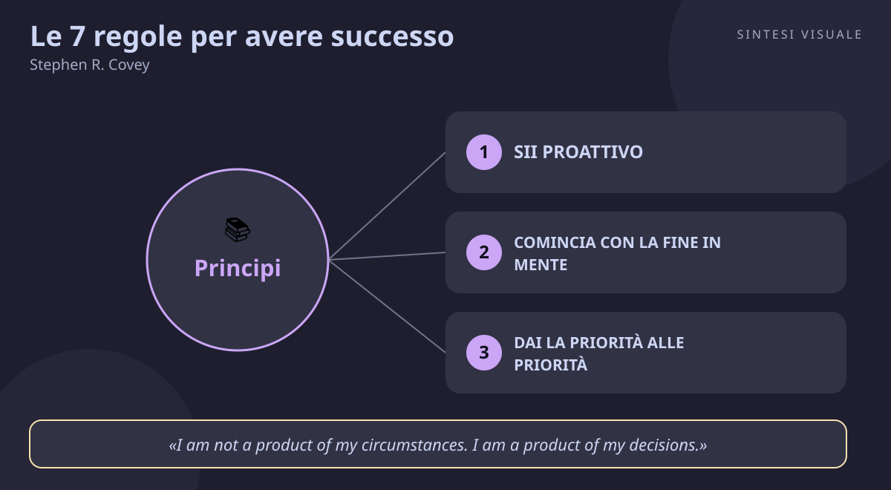

Home / Libri / Le 7 regole per avere successo

Le 7 regole per avere successo
Stephen R. Covey · Crescita personale
«Le 7 regole per avere successo»
- Proattività
- Fine in mente
- Win-win
- Affila la lama
🧭Introduzione
Stephen R. Covey (1932–2012) non era un motivatore da palcoscenico: era un professore universitario americano, esperto di leadership e consulente d'impresa, cofondatore di quella che sarebbe diventata la FranklinCovey. Per scrivere questo libro fece qualcosa di insolito: studiò due secoli di letteratura americana sul successo, dal 1776 in poi, e scoprì un ribaltamento storico. Per circa 150 anni i libri insegnavano l'etica del carattere — integrità, umiltà, coraggio, giustizia, pazienza; poi, dopo la Prima guerra mondiale, quasi tutti passarono all'etica della personalità: tecniche di immagine, trucchi di comunicazione, scorciatoie. Covey scommise che le scorciatoie non funzionano e costruì un'alternativa basata su princìpi. Uscito nel 1989, il libro ha venduto decine di milioni di copie, è stato tradotto in oltre 40 lingue ed è stato definito il libro di business più influente del Novecento.
Perché conta oggi: viviamo sommersi da tecniche — 5 trucchi per vendere, 3 segreti per la felicità, prompt magici per lavorare meno. Covey ricorda che nessuna tecnica regge senza il carattere che la sostiene: se mancano fiducia, visione e disciplina, i trucchi si vedono lontano un miglio.
A chi è utile: a chi si sente sempre di corsa ma mai efficace, a chi litiga in casa e al lavoro per le stesse cose, a manager, genitori, insegnanti e a chiunque voglia passare dal reagire agli eventi al guidarli.
📘Riassunto
La scintilla centrale: l'efficacia vera non nasce dalle tecniche della personalità ma da abitudini radicate in princìpi universali; si cresce lungo un continuum di maturità — dalla dipendenza all'indipendenza (vittoria privata) e poi all'interdipendenza (vittoria pubblica).
La struttura logica procede in tre atti:
- Le fondamenta — il cambio di paradigma (vedere il mondo in modo diverso prima di agire diversamente), l'etica del carattere contro l'etica della personalità, e la favola dell'oca dalle uova d'oro: l'efficacia è l'equilibrio tra il risultato (P) e la capacità di produrlo (PC).
- La vittoria privata (abitudini 1–3) — padroneggia te stesso: sii proattivo, comincia con la fine in mente, dai la priorità alle priorità. Qui si passa dalla dipendenza all'indipendenza.
- La vittoria pubblica (abitudini 4–6) e il rinnovamento (abitudine 7) — costruisci con gli altri (win-win, capire prima di farti capire, sinergia) e mantieni la macchina in forma affilando la lama ogni giorno, nelle quattro dimensioni: fisica, mentale, sociale-emotiva, spirituale.
Il punto di svolta: la matrice del tempo dell'abitudine 3 (quadranti urgente/importante). Da lì il lettore capisce che il problema non è la mancanza di tempo, ma il dedicare quasi tutto il tempo alle urgenze e quasi niente a ciò che conta davvero: il quadrante II, importante ma non urgente.
L'eredità oggi: concetti come "cerchio di influenza", "quadrante II", "win-win o nessun accordo" e "ascolto empatico" sono entrati nel linguaggio di aziende, scuole e coaching in tutto il mondo; il libro resta il manuale di riferimento della leadership centrata sui princìpi.
💡Concetti chiave
- Sii proattivo: tra stimolo e risposta c'è uno spazio, e in quello spazio vive la tua libertà di scegliere.
- Comincia con la fine in mente: se non sai dove vuoi arrivare, ogni scala che sali potrebbe essere appoggiata al muro sbagliato.
- Dai la priorità alle priorità: vivi nel quadrante II — le cose importanti ma non urgenti — o le urgenze vivranno al posto tuo.
- Pensa win-win: cerca accordi in cui vincono tutti, o digli di no; la scarsità avvelena, l'abbondanza costruisce.
- Cerca prima di capire, poi di farti capire: quasi nessuno ascolta per capire, quasi tutti ascoltano per replicare.
- Sinergizza: la soluzione migliore non è la mia né la tua, è la terza alternativa che nasce solo insieme.
- Affila la lama: sei lo strumento più prezioso che hai; se non lo mantieni, tutto il resto si smussa.
📖1. Sii proattivo
Definizione essere proattivi significa assumersi la responsabilità della propria risposta: tra ciò che accade (stimolo) e ciò che facciamo (risposta) esiste uno spazio di scelta. Covey distingue il cerchio della preoccupazione (tutto ciò che ci preoccupa) dal cerchio di influenza (ciò su cui possiamo agire): i proattivi allargano il secondo lavorandoci sopra, i reattivi lo restringono lamentandosi del primo. Esempio due colleghi subiscono lo stesso taglio di budget. Il primo passa settimane a dire "con questi tagli è impossibile, è colpa dei capi"; il secondo dice "non controllo il budget, ma controllo il mio piano: cosa posso tagliare senza toccare i clienti?". Dopo tre mesi il primo è fermo, il secondo ha un piano. Come applicarlo (a) per una settimana annota quante volte dici "devo", "non posso", "è colpa di..."; (b) riformula ogni frase in "scelgo di...", "posso..."; (c) scegli un problema che ti assilla e fai oggi una piccola azione dentro il tuo cerchio di influenza. Errore comune confondere la proattività con l'iperattività o l'aggressività; schiacciare gli altri non è proattività, è reattività travestita da energia. Collegamento Viktor Frankl (L'uomo in cerca di senso, già libro del giorno): anche in un lager, l'ultima libertà umana è scegliere il proprio atteggiamento; Covey riprende esplicitamente questa idea.
📖2. Comincia con la fine in mente
Definizione ogni cosa viene creata due volte: prima nella mente, poi nella realtà. L'abitudine chiede di definire la "fine" — la persona che vuoi essere, i valori che vuoi incarnare — e di scriverla in una missione personale che faccia da bussola per ogni decisione. Esempio un padre che lavora 60 ore a settimana per "dare tutto ai figli" si ferma e immagina cosa vorrebbe che i figli dicessero di lui tra vent'anni: "era sempre in ufficio" oppure "c'era quando contava"? La missione riscrive l'agenda: due sere a settimana spente dal lavoro, non negoziabili. Come applicarlo (a) fai l'esercizio del funerale di Covey: cosa vorresti che dicessero di te un collega, un amico, un familiare?; (b) scrivi una missione personale in 5-8 righe (chi vuoi essere, per chi, secondo quali princìpi); (c) rileggila ogni domenica prima di pianificare la settimana. Errore comune scrivere una missione generica da poster aziendale ("eccellenza, qualità, successo") che non taglia né cuce; se va bene per tutti, non guida nessuno. Collegamento la famosa frase di Covey sulla scala appoggiata al muro sbagliato dialoga con la "scala" di Atomic Habits (Clear): obiettivi senza identità portano fuori strada; prima la direzione, poi la velocità.
📖3. Dai la priorità alle priorità
Definizione la matrice urgente/importante divide tutto in quattro quadranti: I (urgente e importante: crisi, scadenze), II (non urgente ma importante: prevenzione, relazioni, pianificazione, salute), III (urgente ma non importante: interruzioni, riunioni inutili), IV (né urgente né importante: perdite di tempo). La chiave non è dare priorità a ciò che è in agenda, ma mettere in agenda le priorità: vivere nel quadrante II. Esempio un commerciale passa le giornate nel quadrante I (clienti arrabbiati) e III (chat e telefonate a vuoto); non ha mai tempo per il quadrante II (formarsi, preparare le visite, curare i clienti buoni) — così i clienti buoni diventano arrabbiati e il quadrante I cresce ancora. Circolo vizioso perfetto. Come applicarlo (a) per tre giorni segna ogni ora in quale quadrante sei stato; (b) blocca in agenda 3 fasce settimanali intoccabili di quadrante II (sport, studio, pianificazione); (c) impara a dire no con una frase pronta: "se dico sì a questo, a quale priorità dico no?". Errore comune credere che "urgente" significhi "importante"; quasi tutto ciò che urla è quadrante III, e delegarlo non è egoismo ma igiene. Collegamento David Allen (Getting Things Done) e Cal Newport (Deep Work, già libro del giorno): proteggere blocchi di lavoro profondo è quadrante II applicato alla conoscenza.
📖4. Pensa win-win
Definizione nelle relazioni esistono sei paradigmi (vinco-perdi, perdi-vinci, perdi-perdi, vinci, vinci-vinci, vinci-vinci o nessun accordo). Solo l'ultimo regge nel tempo: accordi in cui entrambe le parti guadagnano, sorretti dalla mentalità dell'abbondanza — c'è abbastanza successo per tutti — invece che della scarsità. Se l'accordo equo è impossibile, meglio nessun accordo che un compromesso avvelenato. Esempio un freelance e un cliente discutono il prezzo: invece di tirare sul prezzo fino a scontentare uno dei due, ridisegnano il pacchetto — meno revisioni ma consegna più rapida a un prezzo intermedio. Il cliente risparmia tempo, il freelance protegge il margine: entrambi firmano volentieri e si ricontattano. Come applicarlo (a) prima di ogni trattativa scrivi cosa sarebbe una vittoria per l'altra parte; (b) dichiara apertamente il paradigma: "cerchiamo una soluzione che vada bene a entrambi, altrimenti preferisco non farla"; (c) alimenta il "conto corrente emotivo": piccoli depositi di cortesia e promesse mantenute. Errore comune scambiare il win-win per il buonismo: cedere sempre per "non litigare" è il paradigma perdi-vinci, e accumula risentimento fino all'esplosione. Collegamento Fisher e Ury (Getting to Yes) con la negoziazione "di principio"; Chris Voss (Never Split the Difference, già libro del giorno) condivide la meta ma usa tattiche diverse — empatia tattica invece di princìpi dichiarati.
📖5. Cerca prima di capire, poi di farti capire
Definizione l'ascolto empatico significa ascoltare con l'intento di capire davvero — riflettere il senso e il sentimento dell'altro — prima di presentare le proprie ragioni. Covey lo chiama il principio più importante delle relazioni umane: solo quando l'altro si sente capito abbassa le difese e diventa disposto ad ascoltare a sua volta (ethos, pathos e poi logos: prima credibilità ed empatia, poi la logica). Esempio tua figlia dice "la scuola è inutile". Risposta automatica: predica sui voti (e litigio). Risposta empatica: "sembra che tu ti senta demotivata, è successo qualcosa?" — e scopri che il problema è un compagno, non la scuola. Il problema vero emerge solo dopo l'ascolto. Come applicarlo (a) nelle prossime tre conversazioni difficili, prima di replicare riformula: "se ho capito bene, tu pensi che... perché..."; (b) vai avanti solo quando l'altro dice "esatto"; (c) solo allora presenta il tuo punto, partendo da ciò che avete in comune. Errore comune il finto ascolto — stare zitti preparando la replica, fare domande-trappola, diagnosticare prima di aver capito ("il tuo problema è che..."). Collegamento Daniel Goleman (Intelligenza emotiva, già libro del giorno) con l'empatia come pilastro; Thomas Gordon (Genitori efficaci) con l'ascolto attivo in famiglia.
📖6. Sinergizza
Definizione la sinergia è il frutto delle abitudini 4 e 5: quando persone che si fidano e si capiscono valorizzano davvero le differenze, il risultato supera la somma delle parti — emerge una "terza alternativa" migliore delle proposte di partenza di ciascuno. Esempio in un team, marketing vuole spendere tutto in pubblicità e prodotto vuole spenderlo in sviluppo. Invece di spartire il budget a metà (compromesso scontento), le due parti inventano insieme la terza via: un programma di prova gratuita per i clienti esistenti che fa da marketing e da test del prodotto — costa poco e fa entrambe le cose. Come applicarlo (a) davanti a un disaccordo, vieta il voto per 30 minuti e chiedi "qual è la terza alternativa?"; (b) invita esplicitamente il punto di vista opposto: "convincimi che ho torto"; (c) celebra le differenze di stile nel team invece di uniformarle. Errore comune chiamare "sinergia" il conformismo di gruppo o il compromesso al ribasso; se nessuno è scontento ma nessuno è entusiasta, non è sinergia, è pareggio. Collegamento il brainstorming di Alex Osborn e le pratiche agile (retrospettive, team cross-funzionali); in natura, è la logica delle simbiosi: due organismi insieme fanno ciò che nessuno dei due fa da solo.
📖7. Affila la lama
Definizione un taglialegna che sega per ore con la lama smussata e "non ha tempo di fermarsi ad affilarla" è la parabola di Covey: il rinnovamento regolare nelle quattro dimensioni — fisica (movimento, alimentazione, sonno), mentale (lettura, scrittura, studio), sociale-emotiva (relazioni, servizio, empatia), spirituale (valori, meditazione, natura) — è ciò che rende sostenibili le altre sei abitudini. Esempio un manager che dorme 5 ore, non legge da anni e non vede gli amici "perché lavora" diventa ogni mese più reattivo, distratto e irritabile — e chiama tutto questo "stress". Mezz'ora di cammino al giorno, un libro al mese e una cena a settimana con gli amici gli restituirebbero più lucidità di qualunque corso di time management. Come applicarlo (a) fissa un minimo settimanale per ciascuna dimensione (es. 3 camminate, 1 ora di lettura, 1 uscita con una persona cara, 10 minuti di riflessione al giorno); (b) trattalo come un appuntamento di lavoro, non come optional; (c) ogni mese chiediti quale lama si sta smussando. Errore comune il tutto-o-niente — maratone di palestra a gennaio e divano a marzo; il rinnovamento funziona solo se piccolo e continuo, come l'interesse composto. Collegamento Atomic Habits (Clear, già libro del giorno) con l'1% meglio ogni giorno; Hans Selye e la ricerca sullo stress: il recupero non è ozio, è parte della prestazione.
💬Citazioni da ricordare
"I am not a product of my circumstances. I am a product of my decisions." — il manifesto della proattività: le circostanze condizionano, ma la scelta finale resta tua. (abitudine 1)
"Most people do not listen with the intent to understand; they listen with the intent to reply." — la diagnosi più citata del libro: se ascolti solo per replicare, non stai ascoltando. (abitudine 5)
"The key is not to prioritize what's on your schedule, but to schedule your priorities." — il cuore dell'abitudine 3: l'agenda deve nascere dalle priorità, non il contrario. (abitudine 3)
🌍Esempi di oggi
Tre situazioni dove le 7 abitudini si vedono in azione:
- Il gruppo WhatsApp di condominio. Una lamentela sui rumori diventa una guerra di messaggi: tutti reattivi, tutti nel cerchio della preoccupazione. Un vicino proattivo sposta la conversazione nel cerchio di influenza: propone un'assemblea, ascolta entrambe le parti, cerca un accordo win-win sugli orari. Stesso palazzo, abitudine diversa, esito opposto.
- Il collega sommerso dalle urgenze. Risponde a ogni notifica in tempo reale, salta il pranzo, rimanda il corso di formazione "a quando avrò tempo": vive nei quadranti I e III e non entra mai nel II. Risultato: le stesse crisi si ripetono ogni mese, perché chi non ha tempo per prevenire avrà sempre tempo per riparare.
- La trattativa sullo stage. Un ragazzo accetta il primo stipendio proposto pur di "non perdere l'occasione" (perdi-vinci) e dopo tre mesi è demotivato; un altro chiede cosa serve davvero all'azienda, propone un periodo di prova con obiettivi chiari e un adeguamento concordato: cerca il win-win o nessun accordo, e parte con un patto che entrambi vogliono onorare.
🛠️Azioni pratiche
- La settimana nel quadrante II (30 minuti, domenica sera): apri l'agenda e blocca 3 fasce intoccabili di importante-ma-non-urgente (movimento, studio/formazione, una relazione da curare); tutto il resto dovrà stare intorno, non sopra.
- Una conversazione empatica (15 minuti, una volta): scegli una persona con cui c'è tensione e fai un colloquio dove parli pochissimo: riformula ciò che dice finché non ti conferma "esatto", e solo allora esponi il tuo punto.
- La missione in una pagina (20 minuti, una volta): scrivi chi vuoi essere e per cosa vuoi essere ricordato in 5-8 righe; appendila dove pianifichi le giornate e usala per dire un "no" motivato entro venerdì.
💎Da portare a casa
Tra ciò che ti accade e ciò che fai c'è uno spazio: abitarlo con princìpi chiari, ogni giorno, è l'intera arte dell'efficacia.
💬Approfondimento in chat
Rispondi con il numero (1-7) del concetto che vuoi espandere ulteriormente, oppure con un tema a cui vuoi dedicare il prossimo libro: public speaking, vendite, negoziazione, stress, emozioni, carriera...
🖼️In un colpo d’occhio

Tocca l’immagine per ingrandirla.